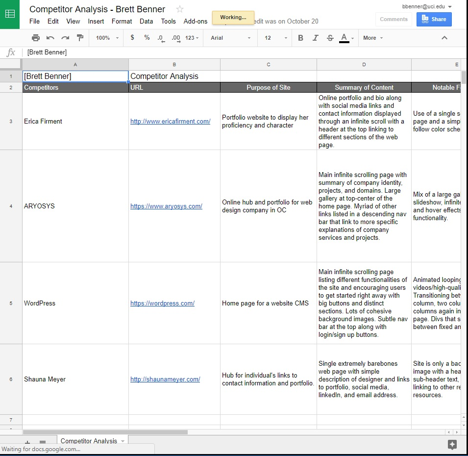

User Research
| User Interviews | |
|---|---|
|
The user interviews were critical in finding the direction and overall vision for my online portfolio. The questions and corresponding answers were more high-level and directed around the purpose of the project and the identity of myself as the owner. Further questions focused on career goals and the role that a portfolio plays in developing a career. |

|
| Competitor Analysis | |
|
The competitor analysis gave me more technical and interactive input on my portfolio compared to the user interviews. It was here that I began to study which design elements to include in my own site and which pitfalls to avoid based upon researching prominent portfolios for individuals as well as organizations. I made sure to focus on individuals and organizations in the design industry since that it is where I wanted to direct my own personal portfolio. I studied what worked well, what was confusing, and why these aspects occurred. |
 |
| Feature Value Matrix | |
|
In the feature value matrix I took educated estimates at the development efforts required for the potential features that I had in mind for my online portfolio as well as the potential values of the features to myself (the business) and users of my site. The synthesized development effort and values of each feature allowed me to quantifiably compare each. The features I chose were core features that I believed were necessary to my site as well as some features that I thought stimulating or attractive to users. |

|
| Feature Prioritzation | |
|
I prioritized the features largely based upon the totals assigned in the feature value matrix. Delightful features had higher values and higher development effort, basic features had lower values and lower development effort, and performance features sat comfortably in the middle. The segregation of features based upon priority allowed me to focus on the most critical and implementable features first and made sure that I had important content on the site before I became overwhelmed with more superficial aspects. |
User Testing
Conclusion
Summary of Findings
Place in at least 2-3 paragraphs of your findings. Be sure to include insights from conducting your research and tests as well as any challenges faced. If you are not quite sure of what conclusions can be drawn, pose a hypothesis as to possible solutions. The idea is to capture how the process has helped in your understanding of how your interface can be improved.
Incorporation of Findings
Place in at least 2-3 paragraphs of how you incorporated findings and/or how you plan to incorporate findings. Be sure to include any challenges faced and how you arrived at solutions. The idea is to capture how the process has helped in your understanding of how your interface can be improved and you actually took steps or plant to take steps to improve it.